EtherNET/IP
Description of the EtherNET/IP protocol and its implementation in the Typhoon HIL toolchain.
Introduction to CIP protocol
Common Industrial Protocol (CIP) is a peer-to-peer object-oriented protocol that provides connections between industrial devices (sensors, actuators) and higher-level devices (controllers). Four networks - DeviceNet, ControlNet, EtherNet/IP and CompoNet use the Common Industrial Protocol for the upper layers of their network protocol. EtherNet/IP relies on CIP for the common network, transport, and application layers also shared by ControlNet and DeviceNet. EtherNet/IP then makes use of standard Ethernet and TCP/IP technology to transport CIP communications packets [1].
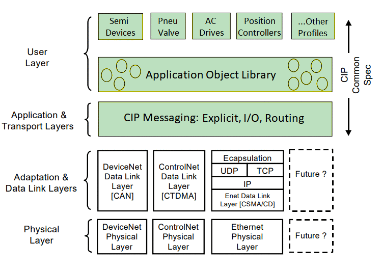
CIP Organization
CIP is defined through data representation and connection management [3] .
- CIP Data Representation - defines how CIP devices represent data. Data exposed over a CIP network is presented as a collection of attributes values grouped into common categories called objects. A class is a set of objects that all represent the same kind of system component. An object instance is the actual representation of a particular object within a class. Each instance of a class has the same set of attributes but has its own set of attribute values.
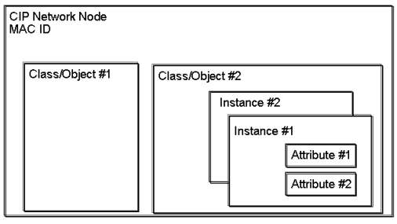
- CIP Connection and Messaging - defines the objects used for managing connections and specifies the connection types that determine how data moves over them.
CIP Messages
In the context of the Common Industrial Protocol (CIP), two types of connections can be established: 'I/O messaging' and 'Explicit messaging'. These modes serve different purposes and have specific characteristics [1].
- I/O Messaging - primarily used for real-time, cyclic data exchange between devices in an industrial network. I/O messaging is designed for sending and receiving critical data related to inputs and outputs (I/O). Data is exchanged periodically at fixed time intervals to ensure that I/O data remains synchronized. This mode is typically used for input data from sensors and output data to actuators. Implicit messages are transported via UDP (User Datagram Protocol).
- Explicit Messaging - used for on-demand, non-real-time data exchange between devices. It allows devices to request and exchange data or perform specific services when needed. Device sends a request message to another device, which responds with the requested data or performs the requested action. Explicit messages are transmitted by TCP (Transmission Control Protocol). Since every message includes destination, source, and connection information, explicit messaging is less efficient than implicit messaging, but it offers a high degree of flexibility.
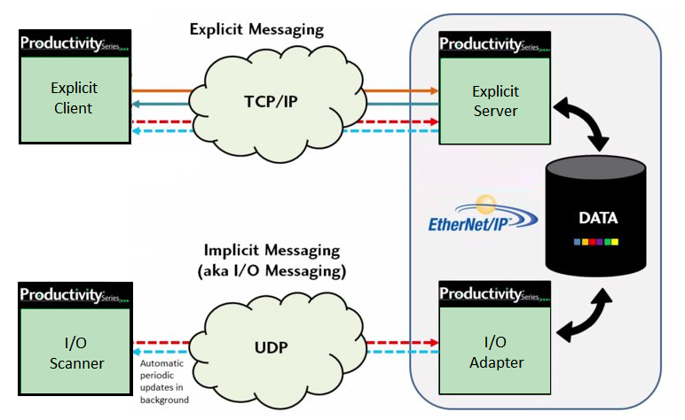
CIP Classes
CIP classes provide a common framework for communication and compatibility among various devices and vendors within an industrial automation network. Each class defines a specific set of attributes and services that can be used to interact with a device [1]. Here are some common CIP classes:
- Identity (0x01) - provides identification and general information about the device.
- Message Router Object Class (0x03) - provides a mechanism for routing explicit messages to the appropriate destination within a network.
- Assembly Object Class (0x04) - provides the interface for CIP devices communicating with other devices over an implicit connection. Assembly objects structure the data exchanged with external devices. There are two types of assembly instances: input and output. The input assembly instance organizes data sent to external devices, while the output assembly instance organizes data received from external devices. Multiple assembly instances can be defined, and an external device can select a specific assembly instance based on its instance ID when transferring data.
- Connection Manager Object Class (0x06) - allocates and manages the internal resources associated with both I/O and Explicit Messaging Connections. An instance of the connection object is generated for every connection. This instance identifies the connection as explicit or implicit, sets the packet rate on implicit connections, and holds other descriptive information about the connection. A connection object is removed when the connection is closed.
- Parameter Object Class (0x0F) - standardized framework for managing and configuring parameters within industrial devices. Parameter objects are essential for configuring, monitoring, and controlling industrial devices in various applications, ensuring they operate effectively.
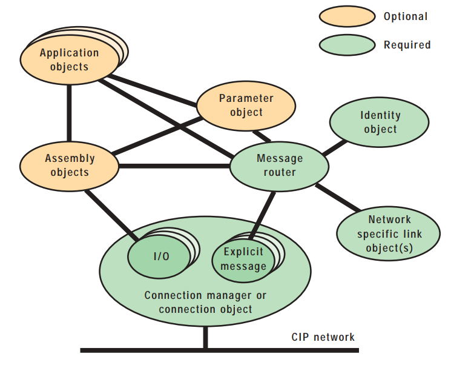
Each I/O assembly instance is defined by its instance number, type and name. Data attributes within these assemblies are represented as arrays of bytes. While Assembly Objects define the data structure, the Forward Open service plays a crucial role in setting up communication sessions and configuring parameters for data exchange. Once the communication session is established, UDP messages serve as the transport mechanism for transmitting data.
CIP Services
In the Common Industrial Protocol (CIP), services refer to a set of predefined actions or operations that devices and controllers can perform when communicating with each other over the network. CIP defines a range of services that allow devices to exchange data, configure parameters, manage connections, and perform other tasks. These services can target either the class level or the instance level of a CIP object [1]. Here are some common CIP services:
- Get Attribute Single (0x0E) - used to retrieve the value of a single attribute of an object within a device. It allows other devices to request specific information about the device, such as its name, status, or configuration parameters.
- Set Attribute Single (0x10) - used to set the value of a single attribute within a device's object. It allows for the configuration and control of device parameters.
- Get Attribute All (0x01) - used to request the values of multiple attributes within a device's object in a single communication request. Instead of sending individual requests for each attribute, a single request can retrieve multiple attributes at once.
- Set Attribute All (0x02) - used to set the values of multiple attributes within a device's object in a single communication request. It allows you to configure or update several attributes at once, reducing the need for multiple individual requests.
- Get Attribute List (0x03) - used to return the contents of the selected gettable attributes of the specified object class or instance.
- Set Attribute List (0x04) - used to set the contents of selected attributes of the specified object class or instance.
- Forward Open (0x54) - used to establish a communication connection between two devices. It allows devices to set up a path for data exchange, enabling them to send and receive data to and from each other. Forward Open is used when a device wants to initiate communication with another device. This service includes parameters such as connection type, network address, and other configuration information required to establish the connection. Once the connection is established, data can be exchanged between the devices.
- Forward Close (0x4E) - used to terminate an existing communication connection between devices. It allows devices to release resources associated with the connection when it is no longer needed.
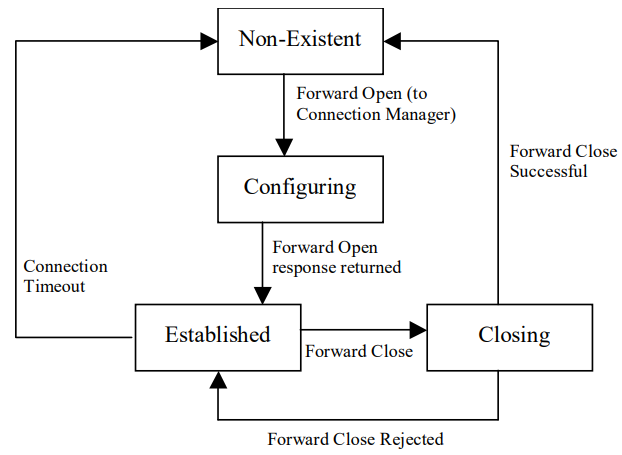
Ethernet/IP Server Component
The Ethernet/IP Server component icon is shown in Table 1. It is currently supported on the following Typhoon HIL devices: HIL402, HIL101, HIL404, HIL602+, HIL604, HIL506, and HIL606.
| component | component dialog window | component properties |
|---|---|---|
 |
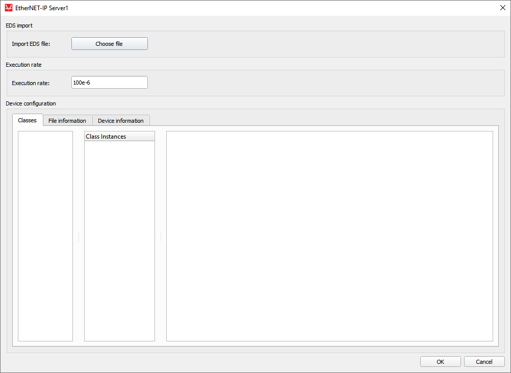 |
|
EDS File
During the setup phase of the Ethernet/IP network, the Ethernet/IP Server must be configured with a special configuration tool. The configuration process is based on electronic device data sheets (EDS files) required for each Ethernet/IP device. EDS files are provided by the device manufacturers and contain electronic descriptions of all relevant communication parameters and objects of the Ethernet/IP device [1].
Device Configuration
- Classes - this tab is a central component of Device Configuration providing a list of Parameter and Assembly classes, along with their instances and the full array of attributes as defined in the EDS file.
- File information - this tab displays fundamental details about the file.
- Device information - in this tab, essential device particulars are presented
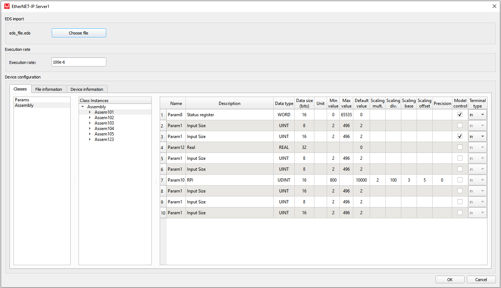
When loading the EDS file, both Parameter classes and Assembly classes are extracted. For each instance, the attributes that describe them are displayed in the tables. Each assembly parameter represents a potential terminal for which a direction can be selected. The Model control column defines if the value for a specific object will be controlled using the signal from the model. If this field is enabled, a terminal will be created on the component that can be used to connect any Signal Processing signal to that object. Depending on the choice from Terminal type column, a port appears as an input or output terminal on the component. File information and Device information tabs (Figure 7) present some basic info parsed from the EDS file.
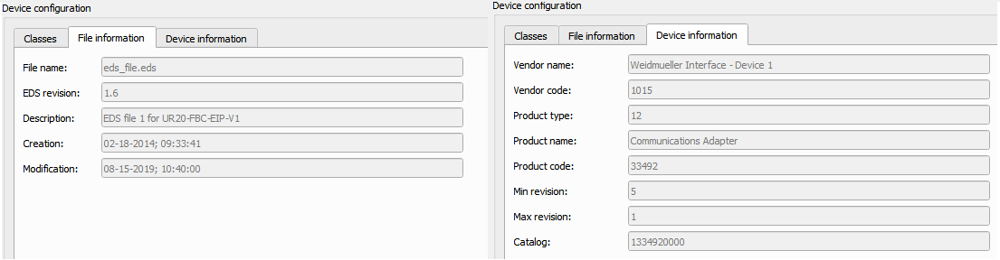
Inside of the Ethernet/IP Server component
Some of the parameter descriptions include offset value, base value, divisor value, multiplier value and decimal precision. There is a possibility of scaling the parameter values using the following formula:
In the EDS file, upper and lower limits can be defined for a parameter. The limit component's role is to ensure that the parameter's value is always in the requested range. So, the entered value on the server side is sent to the client after applying the scaling formula. Figure 8 shows the input terminal of the Ethernet/IP Server component and the scaling components.
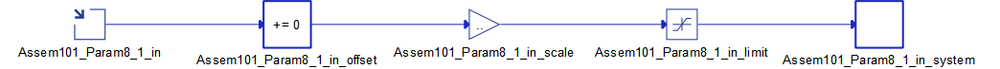
When sending a message from the client to the server, it is necessary to apply the scaling formula again to extract the actual value from the engineering value, as follows:
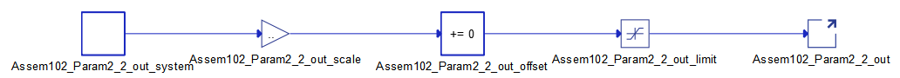
Connection example
After creating terminal components, the appropriate Signal Processing signals for the model can be connected, as shown in Figure 10. This server supports the exchange of I/O messages with the client. It supports explicit messages for some classes, instances and attributes for using Get Attribute Single, Set Attribute Single, Get Attribute All and Get Attribute List services.
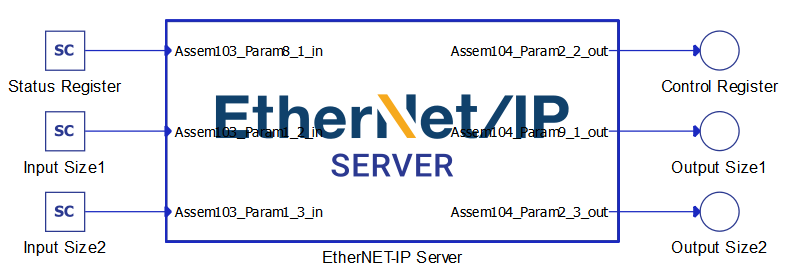
- sending of requests for the execution of a specific CIP service;
- receiving a response to the request that represents that service.
Limitations
The current implementation does not allow the user to define their own server IP address. Instead, it requires the use of the pre-assigned IP address of the HIL device. To identify this IP address, simply hover over the corresponding HIL device within Device Manager.
Virtual HIL support
Virtual HIL currently does not support this protocol. When using a non-real-time environment (e.g. when running the model on a local computer), inputs to this component will be discarded and outputs from this component will be zeroed.
References
- ODVA & ControlNet International Ltd. (2007). The CIP Networks Library Volume 1: Common Industrial Protocol (CIP™) Edition 3.3. Open DeviceNet Vendor Association, Inc.
- Handel, M. and Woods, J. (2022). The Integration of Time-Sensitive Networking into EtherNet/IP™ Technologies. https://www.odva.org/wp-content/uploads/2022/03/2022_ODVA_Conference_Integration-of-Time-Sensitive-Networking-into-EIP-Technologies_Hantel-Woods_FINAL.pdf.
- Rinaldi, J. (2018). What is CIP?. Real Time Automation. https://www.rtautomation.com/rtas-blog/what-is-cip/
- Hilscher Gesellschaft fur Systemautomation mbH. (2017). EtherNet/IP Scanner | Protocol API V2.10.0 Revision 14 (DOC050702API14EN). Hilscher. https://www.hilscher.com/fileadmin/cms_upload/de/Resources/pdf/EtherNetIP_Scanner_Protocol_API_14_EN.pdf
- Collins, D. (2020). What are explicit and implicit messaging in EtherNet/IP?. Motion Control Tips. https://www.motioncontroltips.com/what-are-explicit-and-implicit-messaging-in-ethernet-ip/